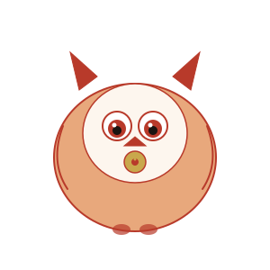

6 Signs You're Actually Healthy
(And Why Your Lab Results Don't Tell the Whole Story)
Here's an uncomfortable thought: modern medicine is incredible at detecting disease. It can find a tumor before you feel it. It can flag cholesterol that might cause a heart attack in twenty years. It is genuinely one of humanity's greatest achievements.
But here's what it's not great at: telling you whether you're actually thriving. "Normal range" means you're not sick yet. It doesn't mean you're well. There's a vast territory between "not diseased" and "vibrantly healthy," and most of us have been living in it for so long we've forgotten there's anything else.
Two thousand years ago, Chinese physicians faced the exact same problem — minus the blood tests and MRI machines. They couldn't peer inside the body with instruments. So they did something clever: they learned to read the body's external signals like a language.

The Six Signs: A 2,000-Year-Old Health Checklist
What follows comes from a lineage of Chinese physicians who spent careers observing patterns in thousands of patients. The framework I'm sharing was systematized by Ni Haisha (倪海建), a Taiwanese practitioner widely regarded as one of the most influential classical Chinese medicine teachers of the modern era. He didn't invent these signs — they're woven through classics like the Huangdi Neijing (皇帝内经) — but he brought them together into a practical, everyday diagnostic framework that any person can use.
These aren't alternative-fact wellness tropes. They're functional benchmarks. Each one reflects how well a specific organ system is doing its job. Let's walk through them.
Sign #1: You Sleep Through the Night
Not "you spend eight hours in bed." Not "you take melatonin and pass out." You fall asleep reasonably easily, and you stay asleep until morning.
In TCM, this is about Yang entering Yin (阳入阴). During the day, Yang energy (active, warm, outward) dominates. At night, it needs to withdraw inward so your body can switch into rest-and-repair mode. If Yang can't settle into Yin — because of stress, heat, deficiency, or emotional turbulence — you get the classic pattern: tired but wired, falling asleep late, waking at 2 or 3 AM, or sleeping lightly and waking unrefreshed.
Sign #2: You Have a Normal Appetite
Not "you force yourself to eat breakfast because articles say you should." Not "you could eat or not eat and wouldn't notice either way." You get hungry at mealtimes, food sounds appealing, and you feel satisfied after eating.
In TCM, appetite is the barometer of the Spleen and Stomach system — your body's digestive power plant. The classics call these organs "the foundation of post-natal Qi" (后天之本). Everything else depends on them. If your digestion isn't transforming food into usable energy properly, nothing downstream works right. No amount of superfood can fix a weak digestive fire.
Sign #3: Your Thirst and Sweat Are Balanced
You're not excessively thirsty all the time. You don't wake up with a dry mouth. You sweat when it's hot or when you exercise — but you don't sweat randomly when everyone else is comfortable, and you don't fail to sweat when you should.
This one's about Yin-Yang balance (阴平阳秘). Thirst relates to Body Fluids (Yin). Sweating relates to Yang Qi's ability to regulate pores. When they're in proper proportion, you barely notice thirst or sweat — they just work quietly in the background, as physiology should.
Sign #4: Your Bathroom Habits Are... Boringly Normal
Bowel movements: regular, neither too loose nor too hard, no pain, no undigested food visible. Urination: normal frequency, pale yellow to straw-colored, no urgency, no burning. If you never think about your bathroom habits, that's actually a good sign.
This reveals more than you'd expect. Regular bowel function tells you your Small Intestine temperature is adequate — which directly determines whether your hands and feet are warm (more on that next). In TCM clinical thinking, treating the Liver often requires treating the Large Intestine — they're connected through the meridian system. Constipation or irregularity can be a downstream effect of stress, emotional holding, or Liver Qi stagnation.
Sign #5: You Have Energy When You Wake Up
Not "you need three cups of coffee before you can speak to another human." Not "you hit snooze four times and drag yourself out of bed." You wake up and — within reason — feel ready to start the day.
Morning vitality is the ultimate functional test of your body's energy reserves. Ni Haisha used specific physiological markers: in men, morning erection; in women, breast sensitivity around menstruation. These aren't being gratuitous — they're objective indicators that your Kidney Qi (your body's deep energy reserve system) is sufficient. If those feel too personal to track, here's a simpler version: do you feel like getting out of bed? Or does staying under the covers feel like the only viable option?
Sign #6: Your Head Is Cool, Your Hands and Feet Are Warm
This one surprises almost everyone who hears it for the first time. Your head should feel cool. Your palms and soles should be warm. If it's the other way around — hot face, cold extremities — that's a significant finding.
Here's why: the head is where all the Yang channels meet ("the gathering place of all Yang"). If Yang Qi is rising upward instead of circulating properly, you get a hot head, flushed face, maybe headaches or dizziness — while your limbs starve for warmth. Warm hands and feet mean your Yang Qi is reaching the extremities — it's circulating all the way out to the fingertips, which is exactly where it should go.
Cold hands and feet are one of the most common complaints in TCM clinics worldwide, and they're almost never "just poor circulation" in the Western sense. They signal that your internal furnace isn't generating or distributing heat effectively.
The Practical Toolkit: What to Do About Each Sign
Knowing is half the battle. The other half is doing something about it. For each of the six signs, here's one simple thing you can try — starting today. (None of these require supplements, expensive equipment, or a degree in biochemistry.)
💤 For Sleep (Sign #1)
No screens for 60 minutes before bed. It's the most boring advice you'll ever hear, and also the most effective. Your Liver meridian peaks between 1–3 AM — if you're staring at blue light until midnight, your body hasn't had time to wind down and Yang can't enter Yin. Replace the scrolling with a book, a warm(not hot) foot soak, or just lying still. Give it three nights.
🍽 For Appetite (Sign #2)
Eat a warm breakfast within an hour of waking. Cold cereal, smoothies, and yogurt straight from the fridge are four-alarm fires to a sluggish Spleen. Switch to warm oatmeal, congee, or even just scrambled eggs. The Spleen likes warmth the way an engine likes oil. This single change is the highest-leverage move for digestive energy.
💧 For Thirst & Sweat (Sign #3)
Drink room-temperature water, not ice water. Iced drinks douse your digestive fire and confuse your body's fluid regulation. Herbal teas (chrysanthemum, mint, or just warm water with a slice of lemon) support balanced hydration without the shock. If you sweat excessively without exertion, reduce spicy foods and alcohol for a week and see what changes.
🚽 For Bathroom Habits (Sign #4)
Don't rush it. Give yourself five undistracted minutes. The Large Intestine meridian is active between 5–7 AM. If you're skipping the bathroom to catch a train or scrolling your phone while half-sitting, you're training your body to ignore its own cues. Drink a glass of warm water upon waking — it gently stimulates the digestive tract. And for regularity: cooked vegetables over raw salads every time.
💪 For Morning Energy (Sign #5)
Get 10 minutes of natural light within 30 minutes of waking. Your body's energy clock is calibrated by sunlight hitting your eyes. If you go from bed to screen to subway to desk, your internal clock genuinely doesn't know it's morning. Step outside, walk around the block, or just stand on your balcony. No phone. Let your eyes tell your brain it's time to be awake. Combine this with a consistent bedtime (even on weekends) and your Kidney Qi gets the rhythm it needs.
🧥 For Warm Hands & Feet (Sign #6)
Soak your feet in warm water for 10 minutes before bed. This one sounds too simple to work. Try it. Warm water draws circulation to the extremities, training your body to send warmth outward instead of hoarding it in the core. Add a slice of fresh ginger to the water if you have it. Keep your ankles covered in cold weather — in TCM, cold enters through the "Three Yin Crossing" point just above the ankle. And if your hands and feet are chronically cold, look at your diet: are you eating enough warm, cooked food, or is everything from the refrigerator?

What This Is (and Isn't)
Let me be clear about something important: this is not a replacement for medical care. If your doctor says you need medication, take it. If something feels scary, get it checked out. These six signs are a complementary lens — a way to notice things that routine labs don't capture.
Think of it like this: modern excels at answering "Is there disease present?" Traditional Chinese medicine excels at answering "Is this body functioning optimally?" They're different questions. Both matter.
A Quick Self-Check (Takes 30 Seconds)
Be honest. For each sign, give yourself a quick yes/maybe/no:
1. Sleep
Do you sleep through the night and wake refreshed?
2. Appetite
Do you get hungry at mealtimes and feel satisfied after eating?
3. Thirst/Sweat
Is your thirst normal? Do you sweat appropriately?
4. Bathroom
Are your bowel movements and urination regular and uneventful?
5. Energy
Do you wake up with reasonable energy for the day ahead?
6. Temperature
Is your head cool and are your hands/feet warm?
Mostly yeses? You're doing better than you think. Keep doing what you're doing.
A mix of yeses and maybes? Pay attention to the "maybes" — they're early warnings.
Mostly nos? Your body has been sending signals. Time to start listening.
Key Takeaways
Health isn't the absence of abnormal lab results. It's the presence of vital signs that say: this body is working well, not just working without catastrophic failure.
Save this somewhere. Come back in a month. See if anything changed. Your body talks — now you know its language.